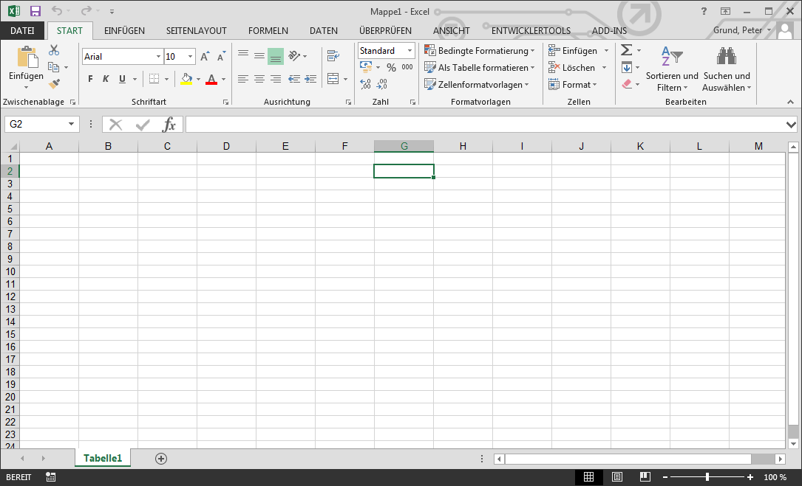
Symbolleiste für den Schnellzugriff
Für den schnellen Zugriff auf Befehle, egal welcher Tab gerade aktiv ist.
Im Standard sind Speichern, Rückgängig und Wiederholen verfügbar. Weitere Befehle können jederzeit hinzugefügt werden.
Menüband
Das Menüband beinhaltet alle nötigen Befehle um mit Excel zu arbeiten. Die Befehle sind auf Tabs gruppiert.
Mein Konto
Direkten Zugriff auf die Kontoeinstellungen von Office.
Befehle
Einzelne Befehle sind zu Gruppen zusammengefasst. Ein einfacher Klick aktiviert den Befehl, manche Gruppen zeigen bei Klick auf den Pfeil weitere Befehle an.
Namenfeld
Das Namenfeld zeigt die Koordinaten oder Namen der aktuellen Zelle an.
Bearbeitungsleiste
In der Bearbeitungsleiste kann der Wert der Zelle verändert werden. Dies gilt insbesondere für Formeln und Funktionen.
Spalte
Eine Spalte ist eine Gruppe von Zellen vom oberen Ende der Seite bis ganz nach unten. In Excel werden Spalten durch Großbuchstaben identifiziert.
Zeile
Eine Zeile ist eine Gruppe von Zellen vom linken Ende der Seite bis zum rechten. In Excel werden Zeile durch Nummern identifiziert
Zelle
Jedes Rechteck auf der Arbeitsmappe ist eine Zelle. Eine Zelle ist der Schnittpunkt einer Zeile mit einer Spalte.
Arbeitsblätter
Excel Dateien werden Arbeitsmappen genannt, jede Arbeitsmappe kann aus einem oder mehreren Arbeitsblättern bestehen.
Seitenansichten
es gibt drei unterschiedliche Ansichten für ein Arbeitsblatt:
- Normal
- Die Standardansicht, zeigt unlimitiert Spalten und Zeilen an
- Seitenlayout
- Teilt das Arbeitsblatt in Seiten auf
- Umbruchvorschau
- eine Übersicht des Arbeitsblattes, hilfreich um Seitenumbrüche zu definieren
Zoom
Ein Schieberegler um den Vergrößerungsgrad festzulegen, inklusiver einer Prozent Anzeige zur Rechten.
Scrollbalken
Vertikale und Horizontale Scrollbalken um über die Seite zu scrollen.
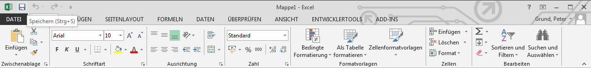
Start Menü
Das Start Menü gibt ihnen Zugriff auf die am meisten verwendeten Befehle um mit Daten zu arbeiten. Dies schließt Kopieren / Einfügen, Formatierungen und Zahlenformate.
Das Start Menü ist beim Start von Excel als Standard ausgewählt.
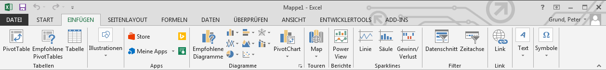
Einfügen Menü
Das Einfügen Menü erlaubt ihnen Diagramme, Tabellen, Sparklines, Filter und vieles mehr einzufügen.
Diese Befehle helfen dabei die Daten der Arbeitsmappe graphisch verständlich darzustellen.
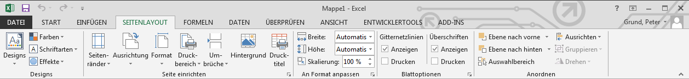
Seitenlayout Menü
Das Seitenlayout Menü hilft bei der Druckvorbereitung der Arbeitsmappe. Hier können Ränder, Seitenausrichtung und Designs geändert werden.
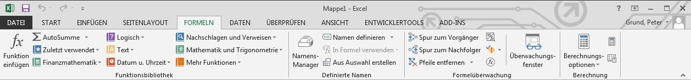
Formeln Menü
Das Formeln Menü erlaubt schnellen Zugriff auf die gebräuchlichsten Funktionen und Formeln in Excel.
Diese Befehle helfen ihnen numerische Daten zu berechnen und zu analysieren, wie z.B. Durchschnitt oder Prozente.
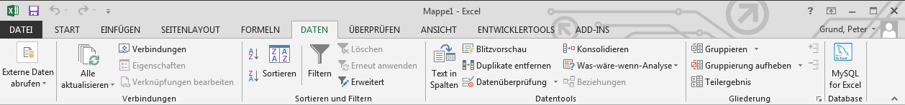
Daten Menü
Das Daten Menü erleichtert das Sortieren und Filtern von Informationen der Arbeitsmappe, besonders bei großen Datenmengen.
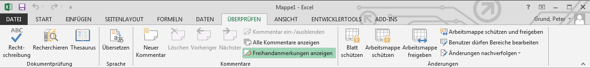
Überprüfen Menü
Das Überprüfen Menü gibt Zugriff auf die Änderungsmöglichkeiten von Excel, wie Kommentare und Änderungen verfolgen.
Diese Befehle erleichtern das die gemeinsame Arbeit an und das Teilen von Arbeitsmappen.
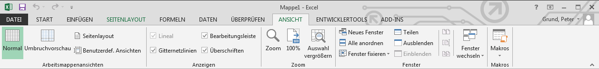
Ansicht Menü
Das Menü Ansicht erlaubt das Wechseln zwischen verschiedenen Ansichten der Arbeitsmappe, sowie das Fixieren von Fenstern.
Diese Befehle sind hilfreich für die Druckvorbereitungen der Arbeitsmappe.
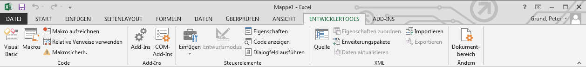
Entwicklertools Menü
Das Entwicklertools Menü stellt Befehle für die Entwicklung mit Excel zur Verfügung. Hier finden sich Makro- und Visual Basic Editoren, Dialog Designer und weiteres.
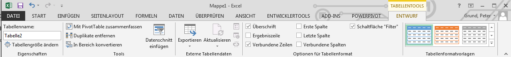
Kontextabhängiges Menü
Kontextabhängige Menüs erscheinen auf dem Menüband während der Arbeit mit konkreten Objekten wie Tabellen oder Diagramme.
Diese Befehle beinhalten konkrete Funktionen der Objekte für Formatierung und ähnliches.
Vorheriges
Nächstes
Leiste für den Schnellzugriff
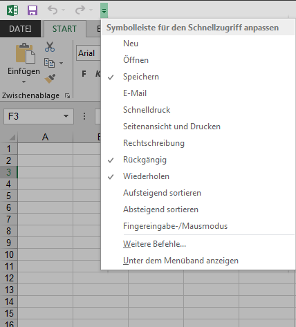
Gleich über dem Menüband befindet sich die Leiste für den Schnellzugriff. Im Standard sind die Befehle Speichern, Rückgängig und Wiederherstellen verfügbar.
Weitere Befehle können einfach über Symbolleiste für den Schnellzugriff anpassen hinzugefügt werden.
Information
- Standard beim Zugang zu der Backstage Ansicht.
- Beinhaltet Informationen zu der aktuellen Arbeitsmappe.
- Hier kann man auch die Arbeitsmappe schützen, überprüfen oder sogar ihre Versionen verwalten.
Neu
Hier können sie eine neue, leere Arbeitsmappe erstellen, oder aber von einer der vielen Vorlagen aus starten.
Öffnen
Hier können sie zuletzt verwendete Arbeitsmappen öffnen, als auch Arbeitsmappen von OneDrive oder anderen Webspeichern.
Die zuletzt verwendeten Arbeitsmappen werden jeweils aufgelistet.
Speichern / Speichern unter
Nutzen sie Speichern und Speichern unter um die aktuelle Arbeitsmappe auf ihrem Computer, in OneDrive oder auch auf anderen Webspeichern zu speichern.
Die Orte der letzten Speicherungen, werden aufgelistet.
Drucken
Hier können sie Druck Einstellungen vornehmen, sowie die Arbeitsmappe drucken.
Eine Druckvorschau der Arbeitsmappe ist hier ebenfalls möglich.
Freigeben
Auf diesem Reiter können sie andere Nutzer einladen und ihre Arbeitsmappe mit anderen Nutzern teilen.
Ein Emailversand kann direkt angestoßen werden, als auch - falls Lync installiert ist - eine Realtime Kollaboration.
Exportieren
Die Arbeitsmappe kann in andere Formate exportiert werden.
Zur Auswahl stehen neben PDF und älteren Excel Formaten auch textbasierte Formate wie CSV ...
Schließen
Hier schließen sie die aktuelle Arbeitsmappe.
( Kein Dialog )
Konto
Hier können sie auf ihr Microsoft Konto zugreifen.
Allgemeine Designs, und Hintergründe können angepasst werden, als auch das Verlassen des Microsoft Kontos.
Optionen
Hier werden verschiedene Excel Optionen verwaltet.
So können sie hier beispielsweise AutoWiederherstellung oder Spracheinstellungen konfigurieren.
Add-Ins
Über eine Dropdown-Liste finden sie weitere Optionen nach Add-Ins gruppiert.
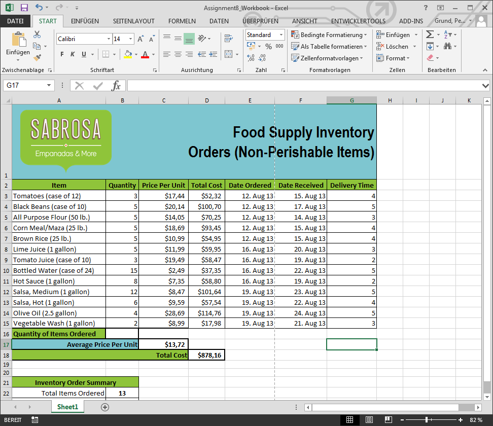
Normale Ansicht
Standard Ansicht für alle Arbeitsblätter in Excel.
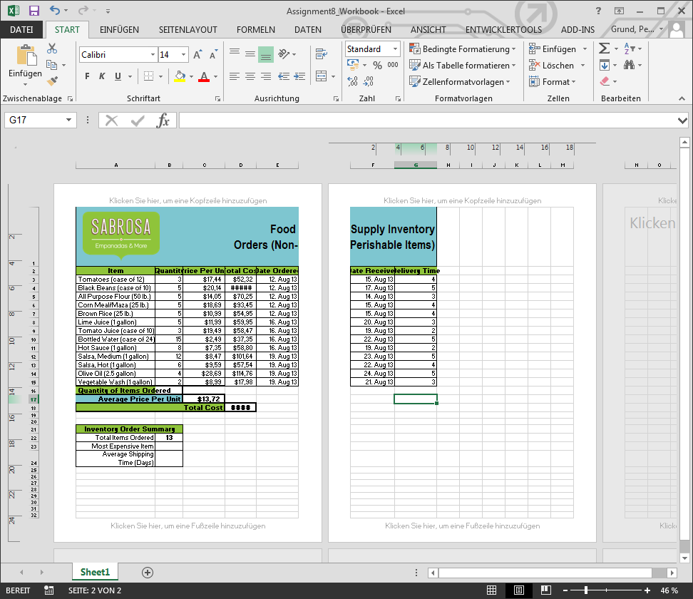
Seitenlayout Ansicht
Hilft zeigt ihnen wie sich das Arbeitsblatt beim Drucken darstellt. In dieser Ansicht können sie auch Kopf- und Fußzeilen hinzufügen.
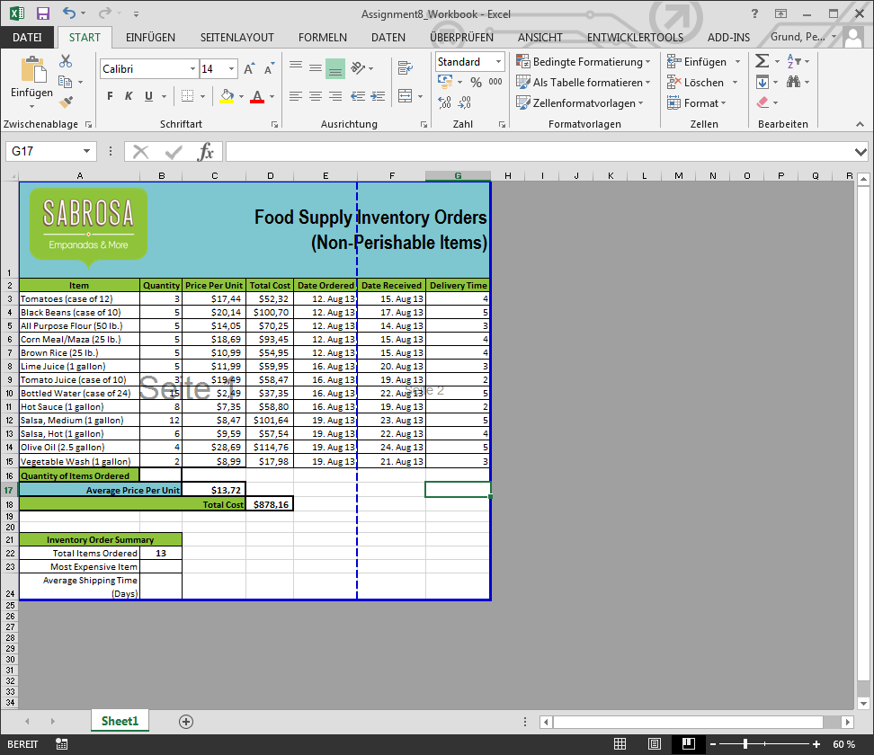
Umbruchvorschau Ansicht
Diese Ansicht erleichtert das Setzen von Seitenumbrüchen in der Arbeitsmappe, dies ist insbesondere hilfreich wenn viele Daten gedruckt werden.
Vorheriges
Nächstes
- Öffnen sie Excel 2013.
- Klicken sie durch alle Tabs, und prüfen sie die einzelne Befehle auf dem Menüband.
- Versuchen sie das Menüband zu minimieren und zu maximieren.
- Fügen sie einen weiteren Befehl der Schnellzugriffsleiste hinzu.
- Navigieren sie zu der Backstage Ansicht und öffnen sie ihre Kontoeinstellungen.
- Wechseln sie zwischen den Arbeitsblatt Ansichten.
- Schließen sie Excel (sie müssen die Arbeitsmappe nicht speichern).
- Erzeugen
- Über die Backstage Ansicht lässt sich bequem eine neue Arbeitsmappe erzeugen. Hierbei habe sie die Auswahl zwischen einer neuen, leeren Arbeitsmappe oder sie bedienen sich an den Vorlagen für verschiedene Anlässe. Für die Vorlagen gibt es sowohl Vorschau als auch zusätzliche Informationen.
- Öffnen
- Auch das öffnen vorhandener Arbeitsmappen ist über die Backstage Ansicht gelöst, egal ob von der lokalen Festplatte oder von einem Webspeicher (OneDrive, ... )
- Anheften
- Falls sie öfters mit derselben Arbeitsmappe arbeiten, können sie die Arbeitsmappe an an die Backstage Ansicht anheften .
Manchmal müssen sie mit Arbeitsmappen arbeiten, die in einer früheren Excel Version erstellt wurden (Bsp: Excel 2003 oder Excel 2010). Diese werden im Kompatibilitätsmodus geöffnet.
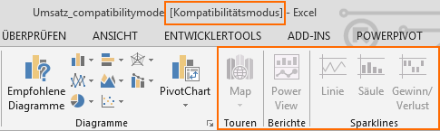
- Einschränkungen
-
Einige Funktionen von Excel stehen nicht zur Verfügung und werden grau hinterlegt.
- Konvertieren
-
Für die Konvertierung einer Arbeitsmappe zum Excel 2013 Format, findet sich auf der Informationsseite der Backstage Ansicht eine eigene Schaltfläche : 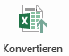.
Speichern und Speicher unter funktionieren in vielerlei Hinsicht ähnlich. Während das reguläre Speichern jede Änderungen sichert, erstellt "Speichern unter" eine Kopie der Arbeitsmappe.
Der standardmäßige Speicherort kann auf der Optionen Seite der Backstage Ansicht ausgewählt werden (lokaler Standardspeicherort).
Die Dokumentwiederherstellung ermöglicht das Wiederherstellen von Änderungen (nach einem Absturz oder Beenden ohne zu speichern). Dafür speichert Excel in regelmäßigen Abständen (alle 10 min) Änderungen in temporäre Dateien.
Frühes und wiederkehrendes Speichern sind die besten Helfer um Datenverlust zu vermeiden.
Arbeitsmappen Exportieren
Excel bietet den Export in mehrere Formate an (PDF, Excel 2003, CSV, ... ). Die Exportfunktion findet sich in der Backstage Ansicht.
Am häufigsten wird wohl der PDF-Export Verwendung finden.
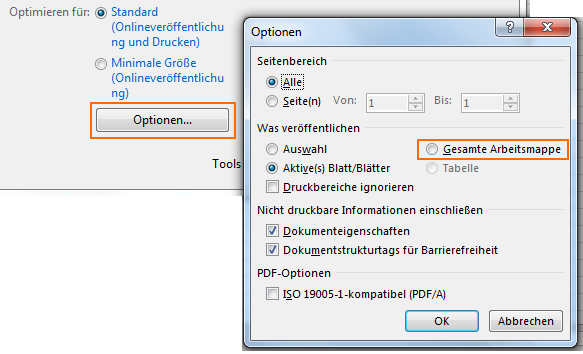
Standardmäßig exportiert Excel lediglich das aktive Arbeitsblatt.
Um die gesamte Arbeitsmappe zu exportieren sind Anpassungen an den Optionen nötig.
Vor dem PDF Export sollte auch immer das Seitenlayout und die Druckansicht geprüft werden.
Auf dem Menüband Überprüfen öffnet der Befehl Rechtschreibprüfung den entsprechenden Dialog.
Für jeden gefundenen Fehler bietet Excel einen Vorschlag an, welcher durch Ändern übernommen werden kann.
"Fehler" können auf unterschiedliche Arten behandelt werden:
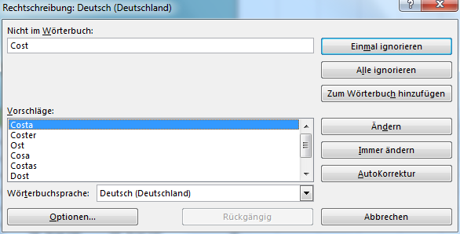
- Einmal ignorieren
- Überspringt das Wort ohne weitere Änderungen vorzunehmen
- Alle ignorieren
- Überspringt das Wort ohne Änderungen und alle weiteren Vorkommen des Wortes im Arbeitsblatt
- Zum Wörterbuch hinzufügen
- Nimmt das Wort in das Wörterbuch auf, es taucht danach nie mehr als Fehler auf.
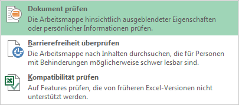
Auf der Backstage Ansicht erlaubt der Dialog Dokumentprüfung das aktuelle Dokument zu untersuchen und zu bereinigen.
Dabei werden folgende Elemente geprüft:
- Kommentare und Anmerkungen
- Dokumenteigenschaften und persönliche Informationen
- Datenmodell
- Inhalts-Apps
- Aufgabenbereich-Apps
- Pivot Tabellen, Pivot Charts, Cubeformeln, Datenschnitte und Zeitachsen
- Eingebettete Dokumente
- Makros, Formulare und ActiveX-Steuerelemente
- Verknüpfungen mit anderen Dateien
- Benutzerdefinierte XML-Daten
- Kopf- und Fußzeilen
- Ausgeblendete Zeilen und Spalten
- Ausgeblendete Arbeitsblätter
- Nicht sichtbarer Inhalt
Auf der Backstage Ansicht findet sich unter Informationen der Menüpunkt Arbeitsmappe schützen.
Dieser Punkt steuert welche Arten von Änderungen andere Personen an dieser Arbeitsmappe vornehmen dürfen.
Bsp: Als abgeschlossen kennzeichnen
Bestätigen sie zweimal die Dialogbox und achten sie auf den Hinweis am oberen Rand des Arbeitsblattes.
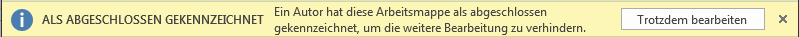
Weitere Alternativen zum Schützen der Arbeitsmappe reichen über mit Kennwort verschlüsseln, Tabellen- oder Struktur schützen und digitalen Signaturen bis hin zu Einschränkungen des Zugriff über Rechteserver.
Um gemeinsam an einer Datei zu arbeiten, kann man die Datei als Email Anhang versenden. Dadurch erzeugt man aber viele verschiedene Versionen derselben Datei, was zu Organisationsaufwand führt.
Teilen heißt eigentlich anderen Personen Zugriff auf diese Datei zu gewähren. Dies erlaubt allen Zugriffsberechtigten an derselben Datei zu arbeiten ohne mehrere Versionen zu organisieren.
Datei ist in OneDrive gespeichert
- Erzeugen sie eine neue, leere Arbeitsmappe.
- Öffnen sie eine bereits vorhandene Arbeitsmappe auf ihrem Rechner.
- Heften sie einen Ordner an die Backstage Ansicht.
- Erzeugen sie eine neue Arbeitsmappe aus einer Vorlage.
- Nutzen sie den Speichern Befehl um die Arbeitsmappe auf dem Desktop zu speichern.
- Speichern sie die Arbeitsmappe in OneDrive und laden sie jemanden ein sie zu lesen.
- Exportieren sie die Arbeitsmappe als PDF.
- Nutzen sie die Rechtschreibprüfung um alle Rechtschreibfehler in der Arbeitsmappe zu korrigieren.
- Nutzen sie die Dokumentenprüfung um alle persönlichen Daten von der Arbeitsmappe zu entfernen.
- Schützen sie die Arbeitsmappe, indem sie sie als abgeschlossen kennzeichnen.
Zellen, Reihen und Spalten
Jedes Rechteck auf dem Arbeitsblatt ist eine Zelle - der Grundbaustein von Excel. Sie wird adressiert über ihre Spalte ( Buchstaben: A, B, ... ) und ihre Zeile ( Zahlen: 1, 2, ... ).
Um eine Zelle auszuwählen genügt ein Klick mit der Maus in die Zelle, mit den Pfeiltasten ist eine Auswahl ebenfalls möglich.
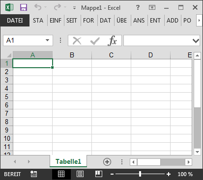
- Orientierung
- Sowohl die Spalte als auch die Zeile für die ausgewählte Zelle wird hervorgehoben.
- Namen
- Im Namenfeld taucht der Name (oder auch Adresse) der Zelle auf.
Die erste Zelle des Arbeitsblattes links oben hat somit den Namen: A1.
Es können auch mehrere Zelle gleichzeitig ausgewählt werden, man spricht dann von einem Zellenbereich.
Die Auswahl erfolgt entweder mit der Maus bei gedrückter linker Maustaste, oder mit bei zusammenhängenden Zellen bei gedrückter Hochstelltaste (Shift) mit den Pfeiltasten.
In beiden Fällen kann man während der Auswahl im Namenfeld die Anzahl der Zeilen und Spalten sehen.
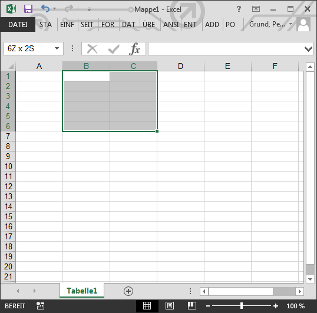
Zellbereiche werden mit Start- und Endpunkt adressiert: B1:C6.
Alle Informationen einer Arbeitsmappe werden in Zellen gespeichert, folgende unterschiedliche Inhalte sind möglich:
- Text
- Zellen können Texte enthalten, wie Buchstaben, Zahlen und Datumsangaben.
- Format Eigenschaften
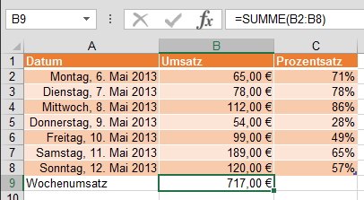
- Zellen können Format Eigenschaften enthalten, welche die Darstellung von Buchstaben, Zahlen und Datumsangaben beeinflussen (Prozent, Hintergrundfarbe, ...).
- Formeln und Funktionen
- Zellen können Formeln und Funktion beinhalten, welche Werte berechnen.
Voraussetzung ist immer eine ausgewählte Zelle, bzw. ein Zellbereich...
- in der Bearbeitungsleiste Text einfügen oder einfach direkt tippen
-
Im Menüband finden sich Funktionen für das Einfügen, Ausschneiden von Inhalten
- Löschen von Zellen ist ebenfalls über das Menüband möglich, beim Löschen von Zellen wandern die Zellen darunter nach oben.
- Über den Kopieren Befehl des Menübandes, oder auch Strg+C wird der ausgewählte Zellinhalt kopiert. Ein gestricheltes Rechteckzeigt die kopierte Zelle an.
- Zellinhalte Einfügen gelingt ebenfalls über das Menüband, oder auch Strg+V.
- Weitere Einfüge Operationen (Werte, Formeln, Grafiken, ...) sind über den ausklappbaren Befehl Einfügen möglich.
- Drag & Drop
- Um Zellen zu verschieben, einfach am Rande des ausgewählten Bereiches (grünes Rechteck) mit gedrückter Maustaste (Mauszeiger wird zu vier Pfeilen) die Maus auf die Stelle ziehen, wo eingefügt werden soll.
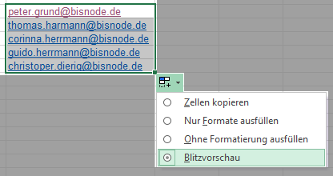
- Datenreihe ausfüllen (Fill Handle)
- Eignet sich besonders um aneinandergrenzende Zellen zu befüllen. Mit der Maus an die rechte untere Ecke des ausgewählten Zellbereiches navigieren, und mit gedrückter Maustaste ziehen.
- Blitzvorschau (Flash Fill)
- Excel kann auch den Inhalt aufgrund bestehender Daten erraten. Gehen sie analog zum Datenreihen ausfüllen vor. Nutzen sie die Auto-Ausfülloptionen um auf Blitzvorschau zu wechseln.
Inhalte suchen und ersetzen
Excel bietet auch einen Dialog zum suchen und ersetzen an Menüband > Start .
Hier kann nach Formatierungen, Werten, Textinhalten, etc. im Arbeitsblatt oder auch in der gesamten Arbeitsmappe gesucht werden.

- Öffnen sie die Arbeitsmappe
Assignment 3a.
- Selektieren sie Zelle
D3. Achten sie wie die Adresse der Zelle in der Namenfeld erscheint und der Inhalt sowohl in der Zelle als auch in der FBearbeitungsleiste erscheint.
- Selektieren sie eine Zelle und versuchen sie Text und Zahlen einzufügen.
- Löschen sie eine Zelle. Achten sie darauf wie die Zellen darunter sich nach oben verschieben um den freien Platz auszufüllen.
- Schneiden sie die Zellen
D4:D6 aus und fügen sie sie in E4:E6 ein.
- Ziehen sie einige Zellen auf eine andere Stelle im Arbeitsblatt.
- Benutzen sie den fill handle um eine Datumserie in Zeile 3 fortzuführen.
- Benutzen sie den Finden Dialog um den Namen "Lewis" zu entdecken.
- Höhe und Breite anpassen
-
Navigieren sie mit der Maus über die Spaltengrenze innerhalb der Kopfzeile, aus dem
Kreuz wird ein Doppelpfeil links-rechts. Nun kann mit gedrückter Maustaste die Breite der Spalte angepasst werden.
Analog für die Zeilengrenze, hier wird aus dem Kreuz ein Doppelpfeil oben-unten.
Ein Doppelklick auf die Zeilen-/Spaltengrenze führt zur automatischen Anpassung der Höhe bzw. Breite.
- Einfügen, Löschen
-
Wählen sie die Kopfspalte der Zeile aus, unter der sie die neue Zeile einfügen möchten, bzw. die Kopfzeile der Spalte auf deren rechten Seite die neue Spalte eingefügt werden soll. Nutzen sie den Befehl Zellen Einfügen.
Zum Löschen selektieren sie die gewünschte Spalte/Zeile und nutzen sie den Befehl Zellen Löschen.
Zellen löschen vs. Inhalte löschen
- Beim Löschen von Inhalten bleiben die Zellen erhalten, lediglich der Inhalt (Text, Formeln, ... ) wird gelöscht.
- Beim Löschen von Zellen, gehen die kompletten Zellen inklusive Inhalte verloren und Excel zieht die Zellen darunter nach oben
- Verschieben
- Das Verschieben kann zum einen über Inhalte bearbeiten erfolgen, indem einfach die komplette Spalte bzw. die komplette Zeile markiert wird, oder aber durch Drag & Drop der markierten Zellen (vgl. Inhalte bearbeiten).
- Ausblenden, Einblenden
- Bei der Selektion der kompletten Zeile/Spalte erscheinen im Kontextmenü (rechte Maustaste) die Optionen Ausblenden und Einblenden.
Diese Funktion blendet komplette Spalten oder Zeilen aus, bzw. stellt sie wieder her.
Zeilenumbruch
Um innerhalb einer Zelle einen Zeilenumbrüche zu ermöglichen, kann der Befehl Zeilenumbruch verwendet werden.
Hier wird der Inhalt der Zelle mehrmals umgebrochen, wie die Breite der Zelle vorgibt.
Verbinden und zentrieren
Mehrere benachbarte leere Zellen zu einer großen Zelle zusammenführen erfolgt über den Befehl Verbinden.
Im erweiterten Menü können diese Verbindungen wieder aufgelöst werden.
- Öffnen sie die Arbeitsmappe
Assignment 3b.
- Ändern sie die Breite der Spalte welche den Vornamen der Spieler enthält.
- Fügen sie eine Spalte zwischen Spalte
A und Spalte B ein, danach fügen sie eine Zeile zwischen Zeile 3 und Zeile 4ein.
- Löschen sie eine Spalte oder eine Zeile.
- Verschieben sie eine Spalte oder Zeile.
- Fügen sie in der Spalte welche die
Strassen enthält Zeilenumbrüche ein.
- Führen sie die Zellen der
Titel Zeile zusammen, indem sie den Zusammenführen & Zentrieren Befehl ausführen (Zellen A1:E1).
Zellen Formatieren - Schriftart
Insbesondere bei großen Datenmengen ist die Darstellung des Inhaltes entscheidend, daher kann auf dem Menüband Start (Befehlsgruppe Schriftart) für die selektierten Zellen folgendes geändert werden:
- Schriftart ändern
- Excel bietet eine Vielzahl an unterschiedlichen Schriften an. Die Auswahl erfolgt über eine Dropdownliste.
- Schriftgröße ändern
- Die Schriftgröße kann zum einen über eine Zahl (Dropdownliste bzw. Eingabe) als auch über die Schaltflächen Schriftgrad vergrößern bzw. Schriftgrad verkleinern skaliert werden.
- Farben, Fett, Kursiv, Unterstrichen, ...
- Weitere Eigenschaften können ebenfalls über diese Befehlsgruppe gesteuert werden. Der kleine Pfeil öffnet einen kleinen Dialog für die Auswahl.
Zellen Formatieren - Ausrichtung
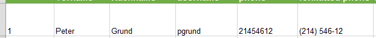
Linksbündig Ausrichten
Der Inhalt wird an der linken Seite der Zelle ausgerichtet.

Zentrieren
Der Inhalt wird zu gleichen Anteilen links und rechts an den Zellenrändern ausgerichtet.
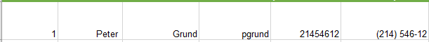
Rechtsbündig Ausrichten
Der Inhalt wird an der rechten Seite der Zelle ausgerichtet.
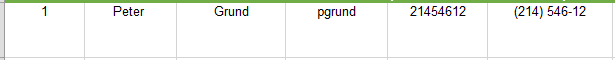
Oben Ausrichten
Der Inhalt wird an der oberen Seite der Zelle ausgerichtet.
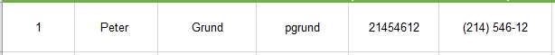
Zentriert Ausrichten
Der Inhalt wird zu gleichen Anteilen oben und unten an den Zellenrändern ausgerichtet.
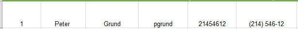
Unten Ausrichten
Der Inhalt wird an der unteren Seite der Zelle ausgerichtet.
Vorheriges
Nächstes
Zellen Formatieren - Ränder und Farben
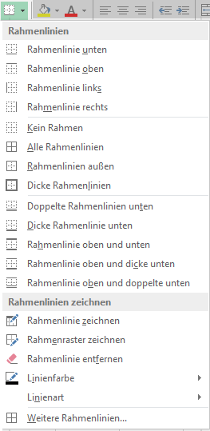
Ränder und Farben erlauben es klar definierte Grenzen für unterschiedliche Bereiche innerhalb des Arbeitsblattes zu ziehen.
Beispiel: Kopfzeilen vom Rest der Daten optisch trennen
- Rahmenlinien
- Über den Pfeil am Rahmenlinien Befehl, gelangt man in das erweiterte Menü, wo für die selektierten definiert werden kann welche Ränder greifen (oben, unten, links, rechts, mittig, ...), als auch Farbe, Linienstil, etc.
- Füllfarbe
- Analog zu den Rahmenlinien kann die Füllfarbe für die selektierten Zellen direkt gesetzt oder über das Aufklappmenü die einzelnen Eigenschaften konfiguriert werden.
Zellen Formatieren - Stil
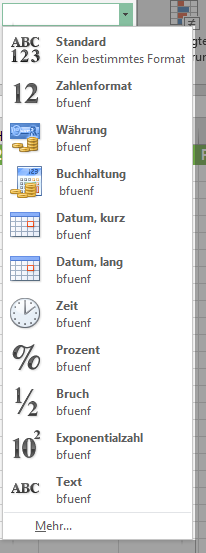
Anstatt manuell Zellen zu formatieren, bietet Excel vordefinierte Zellenformatvorlagen an. Im Aufklappmenü können die ausgewählten Vorlagen direkt angewendet werden.
Eine weitere Stärke von Excel ist das Formatieren von Texten und Zahlen. Anstatt alle Zelleninhalte gleich darzustellen, können unterschiedliche Formate gewählt werden um Datumsangaben, Zeiten, Dezimalzahlen, Prozentangaben. Währungen, ...
Zugang zu den Funktionen bietet das Aufklappmenü beim Zahlenformat.
- Öffnen sie die Arbeitsmappe
Assignment 3c.
- Wählen sie die Zelle
A3 aus und ändern sie Schriftart, Größe, und Farbe der Zelle auf Schriftart Verdana, Größe 16, Farbe der Schrift auf grün.
- Heben sie den Text in Zelle
A4:C4 fett hervor.
- Ändern sie die vertikale und horizontale Ausrichtung des Textes für einige Zellen.
- Fügen sie einen Rand den Kopfzellen in Zeile
4 hinzu.
- Fügen sie eine Hintergrundfarbe allen Zellen der Reihe
4 hinzu.
- Ändern sie das Datumsformat der Zellen
D4:H4 auf Datum, lang.
Arbeitsblätter Gruppieren
Wenn sie mit mehreren Arbeitsblätter gleichzeitig arbeiten, können sie Arbeitsblätter gruppieren. Dadurch werden Änderungen in allen gruppierten Arbeitsblättern parallel vorgenommen.
Um Arbeitsblätter zu gruppieren, klicken sie mit der Maus bei gedrückter Strg-Taste auf die Namen der zu gruppierenden Arbeitsblätter.
Die Gruppierung können sie jederzeit durch die Auswahl eines nicht der Gruppe zugehörigen Arbeitsblattes aufheben, oder auch über das Kontextmenü Gruppierung aufheben.
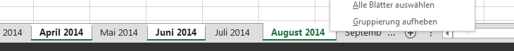
- Öffnen sie die Arbeitsmappe
Assignment 4.
- Fügen sie ein neues Arbeitsblatt ein und benennen sie das neue Arbeitsblatt April.
- Löschen sie das leere Arbeitsblatt mit Namen
Sheet 4.
- Verschieben sie ein Arbeitsblatt.
- Kopieren sie ein Arbeitslatt.
- Gruppieren sie die Arbeitsblätter
January und March zusammen. Fügen sie neuen Inhalt in das Arbeitsblatt January ein und achten sie darau wie es im Arbeitsblatt March auftaucht.
Beim Arbeiten am Seitenlayout wird empfohlen die Seitenlayout Ansicht zu wählen, um Änderungen sofort nachzuvollziehen.
- Ausrichtung
- Über den Befehl Ausrichtung kann einfach zwischen Hochformat und Querformat gewechselt werden.
Hochformat bei vielen Zeilen, Querformat bei vielen Spalten.
- Seitenränder
- Der Befehl Seitenränder lässt über ein Auswahlmenü das schnelle Ändern der einzelnen Rändern zu. Eine Vorauswahl an Rändern ist direkt anwendbar, für benutzerdefinierte Ränder findet sich ein Dialogfenster.
Bei mehrseitigem Drucken möchte man oft die Titelzeile / Titelspalte auf jeder Druckseite haben. Excel bietet mit dem Befehl Drucktitel diese Möglichkeit an.
Beim angezeigten Dialog können wir unter dem Begriff Drucktitel die Zeilen bzw. Spalten angeben, welche auf jeder Seite mitgedruckt werden sollen.
Über eine einfache Auswahl an Zellbereichen werden diese definiert.
Um Seitenumbrüche einzufügen oder zu bearbeiten, empfiehlt sich die Umbruchvorschau Ansicht. Hier kann einfach über Drag & Drop die Umbrüche (blaue Linien) verschoben werden.
Selbstverständlich kann auch über den Befehl Umbrüche ein Seitenumbruch wird unterhalb der selektierten Zeile eingefügt.
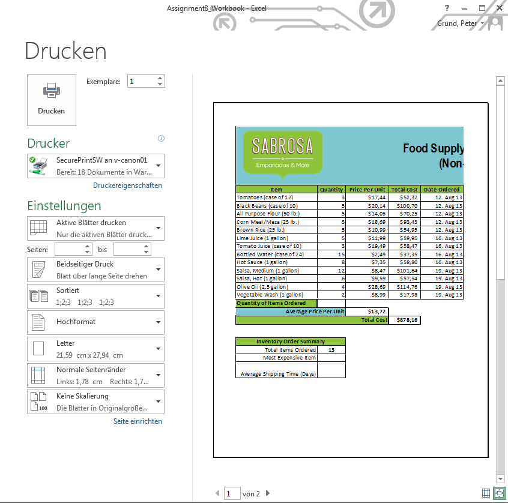
- Drucken Dialog
- Über die Backstage Ansicht gelangt man zum Drucken Dialog.
- Mappe, Blätter, Auswahl drucken
- Bei den Einstellungen kann man wählen, was genau gedruckt werden soll.
- Druckvorschau
- Eine Druckvorschau wird standardmäßig rechts mit angezeigt. Innerhalb der Vorschau kann man auch die Seitenränder mit der Maus anpassen: Befehl Seitenränder anzeigen rechts unten
- Skalierung
- Die Blätter können für den Druck auch skaliert werden, so z.B. Blatt auf eine Seite, alle Spalten auf eine Seite, alle Zeilen auf eine Seite, ...
- Öffnen sie die Arbeitsmappe
Assignment 5.
- Ändern sie die Seitenausrichtung auf Querformat.
- Ändern sie die Seitenränder eines Arbeitblattes.
- Nutzen sie den Druck Titel Befehl um Zeile
1 auf dem Arbeitsblatt Schedule als erstes auf jeder Seite anzuzeigen.
- Fügen sie einen Zeilenumbruch zwischen Zeile
19 und 20 auf dem Arbeitsblatt Schedule ein.
- Navigieren sie zur Seitenlayout Sicht und fügen sie eine Kopf- oder Fußzeile ein.
- Drucken sie die Arbeitsbkätter
Player Info und Schedule.
- Drucken sie ausschließlich die künftigen Spiele der
Bulls (Zellen A12:E19).
- Benutzen sie die Benutzerdefinierte Skalierung um das Arbeitsblatt auf einer Seite komplett zu drucken.
- Passen sie die Ränder in der Druckvorschau an.
Einfache mathematische Berechnungen können mit den Standardoperatoren durchgeführt werden.
| Operation |
Symbol |
Bsp |
Bsp Referenz |
| Addition |
+ |
=2+3 |
=A1+A2 |
| Subtraktion |
- |
=3-2 |
=A2-A1 |
| Division |
/ |
=6/3 |
=A3/A2 |
| Multiplikation |
* |
=3*2 |
=A2*A1 |
| Exponent |
^ |
=3^2 |
=A2^A1 |
Beispiel:
|
A |
B |
C |
| 1 |
2
|
=A1+A2
|
=A2-A1
|
| 2 |
3
|
=A2*A1
|
=A3/A2
|
| 3 |
6
|
=A2^A1
|
|
Standardmäßig sind Referenzen relative, d.h. wenn sie in Zellen kopiert werden, ändern sie ihre Bezugszellen relative zu der neuen Position.
Beispiel:
Wenn die Formel =A1+B1 aus der ersten Zeile in die zweite Zeile kopiert wird, ändert sich die Formel zu =A2+B2
|
... |
C |
| 1 |
... |
=A1+B1
|
| 2 |
... |
=A2+B2
|
Beim bearbeiten oder kopieren sind selbstverständlich Point-und-Klick und Fill-Handle verfügbar.
Im Gegensatz zu relativen Referenzen ändern absolute Referenzen nicht ihre Zellbezüge beim kopieren.
Absolute Referenzen werden benutzt um in einer Referenz die Zeile und/oder Spalte konstant zu halten.
Eine absolute Referenz wird durch ein Dollarzeichen $ ausgezeichnet.
| Format |
Beschreibung |
$A$2
|
Zeile und Spalte ändern sich nicht beim Kopieren |
A$2
|
Zeile ändert sich nicht beim Kopieren |
$A2
|
Spalte ändert sich nicht beim Kopieren |
Referenzen zwischen Arbeitsblätter
Excel erlaubt das referenzieren von jeder Zelle auf jedem Arbeitsblatt.
Um eine Zelle eines anderen Arbeitsblattes zu referenzieren, muss lediglich der Name des Arbeitsblattes gefolgt von einem Ausrufezeichen ! der Zelladresse vorangestellt werden.
Beispiel:
Zelle A1 auf dem Arbeitsblatt Sheet1 Sheet1!A1
Wenn der Name des Arbeitsblattes ein Leerzeichen enthält, so muss zwingend der Name in einfache Anführungszeichen '...' eingeschlossen werden.
- Öffnen sie die Arbeitsmappe
Assignment 7.
- Erzeugen sie eine Formel mit relativen Referenzen. Benutzen sie den fill handle um die Formeln in Zellen
E4 bis E14 auszufüllen. Ein Doppel-Klick auf eine Zelle zeigt die kopierte Formel und die relative Referenz.
- Erzeugen sie eine Formel mit absoluten Referenzen. Korrigieren sie die Formel in Zelle
D4, so dass die Steuer (tax rate) in Zelle E2 als absolute referenz gilt. Nutzen sie dann erneut den fill handle um die Formeln in den Zellen D4 bis D14 auszufüllen.
- Legen sie eine Zellenreferenz in Zelle
B3 auf dem Arbeitsblatt Catering Invoice and, welche auf Zelle E15 auf dem Arbeitsblatt Menu Order verweist.
Funktionen sind vordefinierte Formeln, welche spezielle Werte in bestimmter Reihenfolge berechnen.
Die Syntax einer Formel =SUM(A1:K34) besteht aus:
- Ist-Gleich Symbol
=
- weist den Inhalt als Formel aus
- Formelname
SUM
- eindeutiger Name innerhalb der Funktionsbibliothek von Excel
- Formelargumente
A1:K34
- ein oder mehrere Argumente, welche in die Berechnung mit einbezogen werden sollen
- Argumente können einzelne Zellen oder ganze Zellbereiche umfassen und müssen in geschweiften Klammern stehen
- Mehrere Argumente sind durch Semikolon voneinander getrennt
Excel bietet eine Vielzahl an unterschiedlichen Funktionen, die bekanntesten sind:
- SUMME
- addiert alle Zellwerte der Argumente
- MITTELWERT
- ermittelt den Durchschnitt/Mittelwert der übergebenen Zellwerte
- ANZAHL
- zählt die Anzahl an Zellen
- MAX
- ermittelt den höchsten Wert eines Zellbereiches
- MIN
- ermittelt den niedrigsten Wert eines Zellbereiches
Excel schlägt während der Eingabe der Funktion in der Bearbeitungsleiste potentielle Vervollständigungen des Funktionsnamens vor.
Über den Befehl AutoSumme im Menüband Formeln können über eine Auswahlliste oft verwendete Funktionen schnell eingefügt werden.
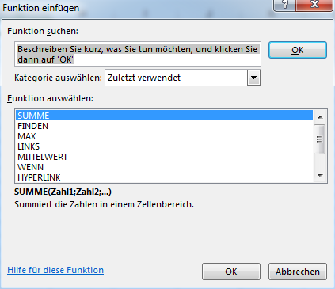
Funktion Einfügen
Wenn sie Probleme haben die richtige Funktion zu finden, hilft ihnen der Funktion einfügen Dialog Funktionen mit Hilfe von Schlüsselwörtern zu finden.
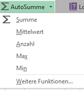
AutoSumme
Schnellzugriff auf häufig verwendete Funktionen wie Summe, Mittelwert oder Anzahl ...
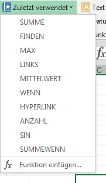
Zuletzt verwendet
Die Liste der von ihnen zuletzt verwendeten Funktionen
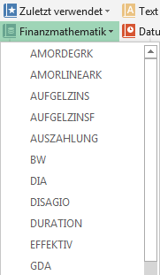
Finanzmathematik
Diese Kategorie gruppiert verschiedene finanzmathematische Funktionen, wie anteilige lineare Abschreibung ...
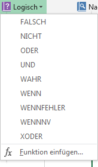
Logisch
Kategorie um Argumente selbst oder auf eine Bedingung zu prüfen. Z.B. WENN ...
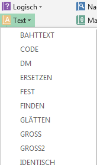
Text
In der Text Kategorie finden sich Funktionen für die Textbearbeitung wieder. So finden sich Funktionen für die Konvertierung in Kleinschreibung oder Ersetzen-Funktionen.
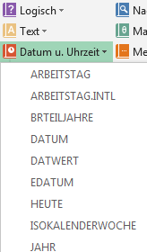
Datum und Uhrzeit
Für das Arbeiten mit Datums- und Zeitwerten sind hier Funktionen gruppiert.
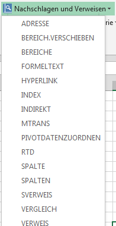
Nachschlagen und Verweisen
Funktionen für das Auffinden von Zellen und Verknüpfungen sind in dieser Kategorie beheimatet.
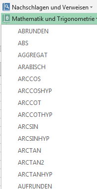
Mathematik und Trigonometrie
In dieser Kategorie finden sich die Funktionen für die Bearbeitung von numerischen Werten wieder. So finden sich hier Funktionen fpr das runden, die Zahl PI, ...
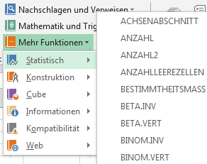
Mehr Funktionen
Unter dieser Kategorie verbergen sich weitere Unterkategorien wie Statistik, Web, etc.
Vorheriges
Nächstes
- Öffnen sie die Arbeitsmappe
Assignment 8.
- Nutzen sie die
SUMME Funktion um in der Zelle B16 die Gesamtanzahl der bestellten Artikel zu ermitteln.
- Nutzen sie den AutoSumme Befehl um die
MAX Funktion in Zelle B23 einzutragen. Benutzen sie die Zellen D3:D15 als Argument um den teuersten Artikel zu bestimmen.
- Durchstöbern sie die Funktionsbibliothek, benutzen sie den Funktion einfügen Befehl um nach verschiedenen Funktionsarten zu suchen.
Die größte Stärke von Excel ist die Verwendung von Formeln.
Formeln können neue Werte berechnen, Daten analysieren und vieles mehr.
Doch Formeln haben auch eine Schattenseite:
Selbst ein kleiner Fehler bei der Eingabe der Formel kann ein falsches Ergebnis liefern.
Noch schlimmer, Excel zeigt nicht immer an ob eine Formel falsch ist.
Im Normalfall macht Excel einfach weiter und liefert die falschen Ergebnisse.
Es obliegt ihnen, bei der Eingabe der Formeln diese sorgfältig zu prüfen.
Daher haben wir eine kleine Checkliste zusammengestellt um ihnen bei der Prüfung ihrer Formeln zu helfen.
Diese Hinweise werden nicht jedes auftretendes Problem lösen aber sie helfen dabei die Ursachen vieler wiederkehrender Fehler zu erkennen ...
Viele Formeln benutzen Zellreferenzen. Bei einem Doppelklick auf die Zelle zeigt Excel farblich hervorgehoben die benutzten Referenzen an.
Oft werden die richtigen Referenzen, aber in falscher Reihenfolge in der Argumenten Liste benutzt.
=A1-B1 anstatt =B1-A1
Aufbrechen in kleinere Formeln
Wenn eine Formel schwierig zu überprüfen ist, ist sie zu groß. Brechen sie sie in mehrere kleinere Formeln mit Zwischenergebnissen auf.
Dies erleichtert das Überprüfen und das schnelle Auffinden von Fehlern.
Schätzen sie das zu erwartende Ergebnis grob ab. Falls das Ergebnis der Formel viel größer oder kleiner als der geschätzte Wert ist, deutet dies auf einen Fehler in ihrer Formel hin.
Achten sie auf Pflichtfelder bei Funktionen. Excel weist hier einen Fehler der Funktionssyntax #NAME? aus. Beim Eingeben der Formel unterstützt sie Excel mit einer kleinen Hinweisbox, welche auch Pflichtfelder anzeigt.
Reihenfolge der Operationen
Excel verwendet stets die mathematische Reihenfolge der Ausführung. Gehen sie die Formel Schritt für Schritt durch und prüfen sie die korrekte Ausführungsreihenfolge ihrer Formel.
Oft besteht die erste Herausforderung der sie gegenüberstehen, im Auffinden von Formeln in der Arbeitsmappe.
Excel erlaubt ihnen über den Befehl Formeln anzeigen Formeln anstatt der resultierenden Werte anzuzeigen.
Tipp: Alt+M+F als Tastaturkürzel
- Die Lagerkosten vom Gesamtbudget abziehen
- Die Lagerkosten mit dem Gesamtbudget multiplizieren
- Findet das durchschnittliche Gesamt Budget
- Das Gesamtbudget von den Lagerkosten abziehen
|
A |
B |
C |
| 1 |
Lagerkosten |
€ 1.200,00 |
|
| 2 |
Gesamt Budget |
€ 4.500,00 |
|
| 3 |
Gesamt Rest |
=B2-B1 |
|
| 4 |
|
|
|
Warum wird hier die MAX Funktion benutzt ?
- Die Gesamt-Strecke zu ermitteln
- Die durchschnittliche Strecke zu ermitteln
- Die längste Strecke zu ermitteln
- Die kürzeste Strecke zu ermitteln
|
A |
B |
C |
D |
E |
F |
G |
| 1 |
Datum |
Strecke |
Zeit (Min) |
|
|
|
|
| 2 |
05.01.2014 |
3,2 |
35 |
|
Bestmarke |
=MAX(B2:B6) |
|
| 3 |
10.01.2014 |
8 |
90 |
|
|
|
|
| 4 |
11.01.2014 |
4,7 |
45 |
|
|
|
|
| 5 |
16.01.2014 |
2 |
17 |
|
|
|
|
| 6 |
20.01.2014 |
5,1 |
65 |
|
|
|
|
| 7 |
|
|
|
|
|
|
|
Was ist an dieser Formel falsch ?
- Es sollte eine Subtraktion anstelle einer Addition benutzt werden
- Ohne Klammern wird die Multiplikation zu früh ausgeführt
- Nichts. Die Formel stimmt.
- Es sollte eine Division anstelle einer Multiplikation benutzt werden
|
A |
B |
C |
| 1 |
Artikel |
Preis |
|
| 2 |
Soda |
€ 1,99 |
|
| 3 |
Pizza XS |
€ 13,89 |
|
| 4 |
Pizzabrot |
€ 3,29 |
|
| 5 |
Trinkgeld |
=B2+B3+B4* 0.2 |
|
| 6 |
Gesamt |
€ 35,71 |
|
| 7 |
|
|
|
Was macht die SUMME Funktion in dieser Formel ?
- Den höchsten Wert des Bereiches
B3:E3 finden
- Die Werte der Zellen in Spalte
B multiplizieren
- Die Anzahl der Zellen in Reihe
3 zählen
- Die Werte des Bereiches
B3:E3 aufaddieren
|
A |
B |
C |
D |
E |
F |
G |
| 1 |
Quartalszahlen Verkauf |
|
| 2 |
Verkäufer |
1. Quartal |
2. Quartal |
3. Quartal |
4. Quartal |
Gesamt |
|
| 3 |
Grund, Peter |
€ 8.690,00 |
€ 557,00 |
€ 3.863,00 |
€ 1.117,00 |
=SUMME(B3:E3)
|
|
| 4 |
Grabenstein, Jens |
€ 18.749,00 |
€ 1.042,00 |
€ 9.355,00 |
€ 1.100,00 |
€ 30.246,00 |
|
| 5 |
Heil, Michael |
€ 8.046,00 |
€ 3.072,00 |
€ 6.702,00 |
€ 1.100,00 |
€ 18.920,00 |
|
| 6 |
Wilhelm, Bettina |
€ 20.114,00 |
€ 3.755,00 |
€ 4.415,00 |
€ 1.089,00 |
€ 29.373,00 |
|
| 7 |
Martinez, Soluna |
€ 10.733,00 |
€ 3.152,00 |
€ 11.601,00 |
€ 1.122,00 |
€ 26.608,00 |
|
Was passiert in dieser Formel als erstes ?
- Die Werte in
C2:C4 werden von den Werten in B2:B4 subtrahiert
- Die
SUMME Funktionen werden berechnet
|
A |
B |
C |
D |
| 1 |
|
Einnahmen |
Ausgaben |
|
| 2 |
Januar |
€ 20.000,00 |
€ 14.000,00 |
|
| 3 |
Februar |
€ 17.000,00 |
€ 15.000,00 |
|
| 4 |
März |
€ 18.000,00 |
€ 13.000,00 |
|
| 5 |
|
|
|
|
| 6 |
Einnahmen Netto
(Vierteljährlich) |
=SUMME(B2:B4)-SUMME(C2:C4)
|
|
|
|
|
|
|
|
Was passiert in dieser Formel als erstes ?
- Die
SUMME Funktion addiert die Werte in B2:B4 auf
- Jeder Wert in
B2:B4 wird mit E1 multipliziert
|
A |
B |
C |
D |
E |
F |
| 1 |
Artikel |
Preis |
|
Steuersatz: |
7,50% |
|
| 2 |
Mixer |
€ 7,99 |
|
|
|
|
| 3 |
Eierkocher |
€ 4,75 |
|
|
|
|
| 4 |
Putzstation |
€ 9,20 |
|
|
|
|
| 5 |
Steuer |
=SUMME(B2:B4)* E1
|
|
|
|
|
| 6 |
Gesamt |
€ 23,59 |
|
|
|
|
| 7 |
|
|
|
|
|
|
Welche Funktion wird zuerst ausgeführt ?
WENNSUMME
|
A |
B |
C |
D |
| 1 |
Vorname |
Nachname |
Spende |
|
| 2 |
Jens |
Grabenstein |
€ 120,00 |
|
| 3 |
Peter |
Grund |
€ 75,00 |
|
| 4 |
Heil |
Michael |
€ 300,00 |
|
| 5 |
|
|
|
|
| 6 |
Spendenziel erreicht ? |
=WENN(SUMME(C2:C4)>500;"Ja";"Nein")
|
|
|
| 7 |
|
|
|
|
Spalten und Reihen Fixieren
- Öffnen sie die Arbeitsmappe
Assignment 9.
- Fixieren sie die ersten zwei Zeilen (Zeile
1 und Zeile 2).
- Öffnen sie ein neues Fenster der aktuellen Arbeitsmappe.
- Nutzen sie den Teilen Befehl um ihr Arbeitsblatt in mehrere Bereiche zu teilen.
- Arbeitsblatt vs Zellen
- Nach Formaten sortieren
- mehrere Ebenen
- nach Benutzerdefinierter Liste sortieren
- Öffnen sie die Arbeitsmappe
Assignment 10a.
- Sortieren sie das Arbeitsblatt nach
Homeroom # (Spalte A) auf- oder absteigend.
- Sortieren sie die Zellen
G3:H7 von groß nach klein nach der Anzahl der Orders (Spalte H).
- Fügen sie die Hintergrundfrabe der Zelle in Spalte
E als zweite ebene für die Sortierung ein.
- Fügen sie eine weitere ebene der Sortierung ein. Nutzen sie eine Benutzerdefinierte Liste um die T-Shirt Größe (Spale
D) nach Small, Medium, Large, X-Large zu sortieren.
- Ändern sie die Sortierreihenfolge der Ebenen nach T-Shirt Größe (Spalte
D), Homeroom # (Spalte A), und Nachname (Spalte C).
- verwenden
- mehrere Filter
- Filter löschen
Filtern - Fortgeschritten
- Suchfilter
- Textfilter
- Zahlenfilter
- Datumsfilter
- Öffnen sie die Arbeitsmappe
Assignment 10b.
- Filtern sie Spalte
B Type, dass lediglich Laptops und Kameras angezeigt werden.
- Suchen sie mit Hilfe eines Such-Filter alle Produkten von
EDI in Spalte C Equipment Detail.
- Löschen sie beide Filter.
- Nutzen sie den Textfilter um Daten anzuzeigen, welche nicht das Wort
saris enthalten.
- Nutzen sie den Datumsfilter um lediglich Artikel ausgecheckt (Spalte
D) im September 2013 anzuzeigen.
- Nutzen sie den Zahlenfilter um alle Einträge mit einer
ID# kleiner als 3000 anzuzeigen.
Reihen Und Spalten Gruppieren
- gruppieren
- anzeigen, verstecken
- Öffnen sie die Arbeitsmappe
Assignment 11.
- Gruppieren sie die Spalten
D und E.
- Nutzen sie die Schaltflächen Detail einblenden bzw. Detail ausblenden um die Gruppe zu öffnen bzw. zu schließen.
- Heben sie die Gruppiereung der Spalten
D und Eauf.
- Fügen sie in das Arbeitsblatt Teilergebnisse für die T-Shirt Größe ein.
- Entfernen sie das Teilergbenis vom Arbeitsblatt.
- Zeilen/Spalten hinzufügen
- Löschen
- Tabellenformatvorlagen auswählen
- Stiloptionen ändern
- Öffnen sie die Arbeitsmappe
Assignment 12.
- Formatieren sie die Zellen
A2:E13 als Tabelle.
- Fügen sie eine Zeile oder eine Spalte der Tabelle hinzu.
- Wählen sie eine Tabellenformatvorlage für die selektierte Tabelle aus.
- Ändern sie den Tabellen-Stil, indem sie eine Ergebniszeile hinzufügen.
- Entfernen sie die Tabelle.

Excel hat eine Vielzahl von Diagrammtypen, jeder Typ mit eigenen Vor- und Nachteilen.

Säulendiagramme
Die Darstellung von Daten in vertikalen Balken kann mit vielen Daten verwedent werden.
Dieser Diagrammtyp wird oft benutzt um
Daten zu vergleichen.

Liniendiagramme
Liniendiagramme sind hervorragend für Trendanalysen.
Die einzelne Datenpunkte sind mit Linien verbunden, was es erleichtert wachsende oder schrumpfende Datenreihen über die Zeitachse zu verfolgen.

Kuchendiagramme
Kuchendiagramme erleichtern den Vergleich von Verhältnissen.
Jeder Datenwert wird als Abschnitt dargestellt, so ist es einfach zu erkennen welcher Datenwert wieviel Prozent des Gesamten ausmacht.

Balkendiagramme
Balkendiagramme entsprechen Säulendiagrammen, sie benutzen lediglich horizontale statt vertikale Balken.

Flächendiagramme
Flächendiagramme sind ähnlich zu Liniendiagramme, lediglich die Fläche unterhalb der Linie ausgefüllt wird.

Oberflächendiagramme
Oberflächendiagramme erlauben ihnen die Darstellung der Daten über eine 3D Fläche hinweg.
Sie eignen sich am besten für viele Daten und erlauben viele Informationen gleichzeitig darzustelle.
Vorheriges
Nächstes

Legende
Die Legende gibt an welche Datenreihe welcher Farbe im Diagramm zugeordnet ist.
Diagrammtitel
Der Titel des Diagramms, sollte kurz und beschreibend sein.
Datenreihen
Die Datenreihen bestehen aus den relevanten Datenpunkten im Diagramm
Vertikale Achse
Die vertikale Achse (auch y-Achse genannt) ist der vertikale Anteil des Diagramms.
Horizontale Achse
Die horizontale Achse (auch x-Achse genannt ist der horizontale Anteil des Diagramms.
Diagramme Anlegen / Verschieben
Layout und Stil von Diagrammen
- Layout und Stil
- Weitere Optionen
- Öffnen sie die Arbeitsmappe
Assignment 13a.
- Erstellen sie mit den Daten des Arbeitsblattes ein Diagramm, nutzen sie dafür die Zellen
A1:F6 als Diagrammdatenbereich.
- Ändern sie das Layout des Diagrammes, nutzen sie hierfür das Schenllayout
Layout 8.
- Wenden sie eine Diagrammformatvorlage an.
- Verschieben sie das Diagramm auf ein neues Arbeitsblatt
Book Sales Data: 2008-2012.
- erzeugen, ändern (Markierungen, Stil, ...)
- vergleichbare Darstellung
- Öffnen sie die Arbeitsmappe
Assignment 13b.
- Erzeugen sie eine Sparkline für den ersten Verkäufer in Zeile
3.
- Benutzen sie den fill handle um Sparklines für alle weiteren Zeilen zu erzeugen
- Setzen sie Markierungen für Höchstpunkt und Tiefpunkt.
- Ändern sie den Typ der Sparkline.
- Ändern sie die Darstellung der Sparklines um die einzelnen Reihen leichter zu vergleichen.
Änderungen auf separatem Blatt listen
Änderungen Annehmen oder Ablehnen
- Öffnen sie die Arbeitsmappe
Assignment 14.
- Aktivieren sie Änderungen nachverfolgen.
- Löschen sie Zellen, fügen sie weitere hinzu oder editieren sie den Inhalt in mehreren Zellen. Achten sie auf die Hervorhebung der geänderten Zellen.
- Nehmen sie alle Änderungen an, dann deaktivieren sie die Nachverfolgung.
- Fügen sie einigen Zellen Kommentare hinzu.
- Zeigen sie alle Kommentare an, dann verstecken sie sie wieder.
Formatierungsregel anlegen
Grundlagen, anlegen, löschen
Datenbalken, Farbskalen, Symbolsätze
- Öffnen sie die Arbeitsmappe
Assignment 15.
- Fügen sie den Verkaufsdaten (Zellen
B3:G23) eine bedingte Formatierungsregel hinzu: alle Zellen deren Wert größer $9000 ist, sollen ein grüne Füllung erhalten.
- Fügen sie eine Vorlage (Datenbalken, Farbskalen, Symbolsätze) als weitere Regel denselben Zellen hinzu.
- Löschen sie alle bedingte Formatierungsregeln vom Arbeitsblatt.
- Zeilen ändern
- Spalten hinzufügen
- Öffnen sie die Arbeitsmappe
Assignment 16.
- erzeugen sie mit den Daten der Arbeitsmappe eine Pivot Tabelle.
- Spielen sie mit den verschiedenen Feldern in den Bereichen
Zeilen und Spalten.
- Filtern sie den Bericht mit einem Datenschnitt.
- Erzeugen sie einen PivotChart.
- Nutzen sie die Pivot Tabelle um folgende Frage zu beantworten: "Welcher Verkäufer hatte den geringsten Umsatz im Januar?"
Tipp: Überlegen sie zuerst welche Felder sie zur Beantwortung der Frage benötigen ...
Zielwertsuche - Beispiel 1
Zielwertsuche - Beispiel 2
- Öffnen sie die Arbeitsmappe
Assignment 17.
- Gehen sie auf das Arbeitsblatt
History Class.
- Nutzen sie die Zielwertsuche um herauszufinden wieviel Punkte sie im
Test 3 schreiben müssen um im Gesamtergebnis einen Mittelwert von 90 zu erlangen.